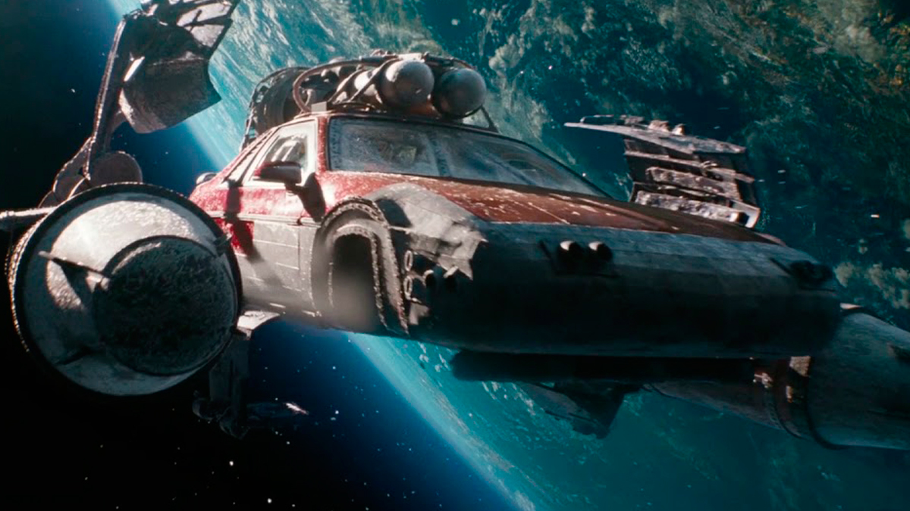
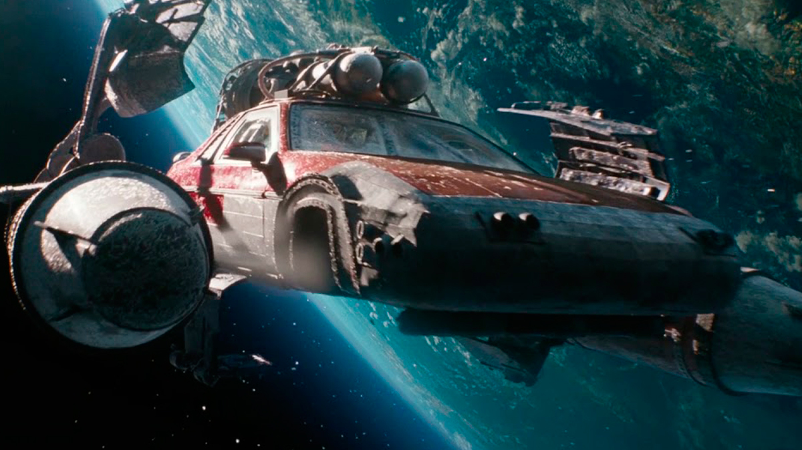

Fast and Furious 9
2021
Fast & Furious 9
es la novena entrega de la saga principal. En esta película, la historia explora el pasado de Dominic Toretto y su relación con su hermano Jakob, mientras el equipo se enfrenta a una nueva amenaza global.
La película inicia con Dom y Letty viviendo una vida tranquila con el pequeño Brian, pero todo cambia cuando el equipo recibe una señal de auxilio de Mr. Nobody. Al investigar, descubren que un dispositivo llamado "Aries", capaz de hackear cualquier sistema en el mundo, ha sido robado por Jakob Toretto, el hermano perdido de Dom. A través de flashbacks, la película revela que Jakob y Dom se separaron en su juventud tras la muerte de su padre en una carrera. Dom creía que Jakob era responsable de su muerte, lo que llevó a su enemistad. El equipo viaja a distintas partes del mundo, desde Londres hasta Tokio, para detener a Jakob y recuperar Aries. En el proceso, descubren que Han está vivo, ya que fingió su muerte con la ayuda de Mr. Nobody. El clímax de la película presenta una secuencia de acción en la que Roman y Tej viajan al espacio en un Pontiac Fiero modificado para destruir un satélite que controlaba Aries. Mientras tanto, Dom y Mia convencen a Jakob de que Cipher lo estaba manipulando, y se reconcilian. La película termina con una reunión familiar, donde dejan un asiento vacío en honor a Brian O’Conner, insinuando su presencia fuera de cámara.
 
